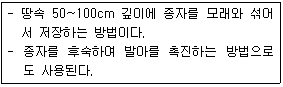
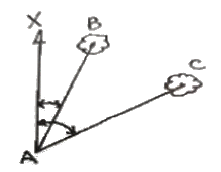
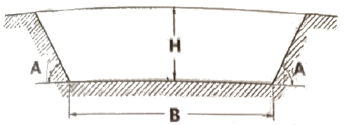
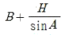
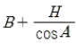
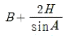
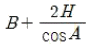

산림기사 (2018-08-19 기출문제)
1과목: 조림학
1. 우리나라 난대림의 특정 수종으로 옳은 것은?
- 곰솔
- 후박나무
- 서어나무
- 가문비나무
(정답률: 71%)

2. 광합성 광반응에 대한 설명으로 옳지 않은 것은?
- ATP를 소모한다.
- NADPH를 생산한다.
- 햇빛이 있을 때에 일어난다.
- 엽록체의 grana에서 진행된다.
(정답률: 69%)
3. 우리나라에서 넓은 분포면적을 가지고 있으며 지역품종(생태형)이 다양한 것은?
- Pinus rigida
- Pinus densiflora
- Pinus koraiensis
- Pinus thunbergii
(정답률: 78%)
4. 밤나무 품종 중 조생종은?
- 미풍
- 석추
- 은기
- 단택
(정답률: 69%)
5. 대립 종자를 파종하는데 가장 알맞은 방법은?
- 점파
- 산파
- 상파
- 조파
(정답률: 80%)
6. 벌채지에 종자를 공급할 수 잇는 나무를 산생 또는 군상으로 남기고 나머지 임목들은 모두 벌채하는 작업은?
- 개벌작업
- 산벌작업
- 택벌작업
- 모수작업
(정답률: 81%)
7. 다음에 설명에 해당하는 것은?

- 냉습적법
- 저온저장법
- 보호저장법
- 노천매장법
(정답률: 83%)
8. 가지치기의 장점으로 옳지 않은 것은?
- 무절재 생산
- 부정아 발생 감소
- 연륜폭을 고르게 함
- 산불로 인한 수관화 피해 경감
(정답률: 80%)
9. 열매가 핵과에 속하는 수종은?
- Alnus japonica
- Cercis chinensis
- Prunus serrulata
- Albizia julibrissin
(정답률: 56%)
10. 모두베기 작업에 대한 설명으로 옳지 않은 것은?
- 양수성 수종 갱신에 유리하다.
- 숲 생태계 기능 복원에 가장 유리한 갱신방법이다.
- 성숙한 임분에 가장 간단하게 적용할 수 있는 방법이다.
- 기존 임분을 다른 수종으로 갱신할 때 가장 빠른 방법이다.
(정답률: 74%)
11. 삽목 작업에 사용하는 발근촉진제로 가장 부적합한 것은?
- 인돌초산
- 인돌부티르산
- 테트라졸륨산
- 나프탈렌초산
(정답률: 73%)
12. 조림 후 육림실행 과정 순서로 옳은 것은?
- 풀베기 → 어린나무가꾸기 → 솎아베기 → 가지치기 → 덩굴제거
- 풀베기 → 덩굴제거 → 어린나무가꾸기 → 가지치기 → 솎아베기
- 풀베기 → 솎아베기 → 가지치기 → 어린나무가꾸기 → 덩굴제거
- 가지치기 → 어린나무가꾸기 → 덩굴제거 → 솎아베기 → 풀베기
(정답률: 72%)
13. 종자의 정선방법으로만 올바르게 나열한 것은?
- 사선법, 풍선법, 수선법
- 봉타법, 유궤법, 침수법
- 구도법, 사선법, 풍선법
- 수선법, 도정법, 부숙법
(정답률: 77%)
14. 수목의 직경생장에 대한 설명으로 옳지 않은 것은?
- 성목의 경우 목부의 생장량이 사부보다 많다.
- 형성층의 활동은 식물호르몬인 옥신에 의해 좌우된다.
- 목부와 사부 사이에 있는 형성층의 분열활동에 의해서 이루어진다.
- 형성층의 분열조직은 안쪽으로 체관세포를 형성하고, 바깥쪽으로 물관세포를 형성한다.
(정답률: 66%)
15. 솎아베기 작업의 목적이 아닌 것은?
- 산불의 위험 감소
- 임분 밀도의 조절
- 임분의 수평구조 안정화
- 조림목의 생육공간 조절
(정답률: 68%)
16. 임업 묘포에 대한 설명으로 옳은 것은?
- 임간묘포는 대부분 고정묘포에 속한다.
- 포지의 토양은 부식질이 풍부한 점토질 토양이 좋다.
- 해가림이 필요한 수종은 묘상의 구획을 동서방향으로 길게 하는 것이 좋다.
- 우리나라 남부지방에서는 경사 5도 이상의 북향사면에 포지를 조성하는 것이 좋다.
(정답률: 61%)
17. 인공조림과 천연갱신에 대한 설명으로 옳지 않은 것은?
- 천연갱신은 산림 작업 및 임분 관리가 용이하다.
- 천연갱신은 성림으로 조성하는 데 오랜 기간이 소요된다.
- 인공조림은 임지생산력과 조림성과의 저하를 초래할 수 있다.
- 인공조림은 묘목의 근계발육이 부자연스럽고 각종 재해에 취약할 수 있다.
(정답률: 70%)
18. 우리나라 산림대에서 난대림지대의 연 평균기온 기준은?
- 4℃ 이상
- 8℃ 이상
- 14℃ 이상
- 18℃ 이상
(정답률: 76%)
19. 질소고정 미생물 중 생활형태가 독립적인 것은?
- Frankia
- Anabaena
- Rhizobium
- Azotobacter
(정답률: 56%)
20. 산림 생태계에서 생물종 간 상호작용에 대한 설명으로 옳지 않은 것은?
- 타감작용은 생물종 간에 기생이라고 할 수 있다.
- 간벌은 생물종 간의 경쟁을 완화하기 위한 작업에 해당된다.
- 두 가지 생물종이 생태적 지위가 다를 경우 서로 중립이라고 한다.
- 한 생물종은 이로움을 받지만 다른 생물종은 무관한 경우를 편리공생이라고 한다.
(정답률: 64%)
2과목: 산림보호학
21. 잣나무 털녹병 방제 방법으로 옳지 않은 것은?
- 중간기주인 송이풀을 제거한다.
- 저항성 품종을 육성하여 식재한다.
- 풀베기와 간벌을 실시하여 숲에 통풍을 양호하게 해준다.
- 담자포자 비산시기인 4월 하순부터 10일 간격으로 보르도액을 2~3회 살포한다.
(정답률: 53%)
22. 모잘록병 방제 방법으로 옳지 않은 것은?
- 묘상이 과습하지 않도록 한다.
- 복토가 충분히 두텁도록 한다.
- 병이 심한 묘포지는 돌려짓기를 한다.
- 질소질 비료보다는 인산질 비료를 충분히 준다.
(정답률: 72%)
23. 대추나무 빗자루병의 병원체는?
- 세균
- 곰팡이
- 바이러스
- 파이토플라스마
(정답률: 82%)
24. 솔잎혹파리 방제 방법으로 옳지 않은 것은?
- 솔잎혹파리먹좀벌을 천적으로 이용한다.
- 박새, 진박새, 쇠박새 등 조류를 보호한다.
- 티아메톡삼 분산성 액제를 수간에 주사한다.
- 피해가 극심한 지역에 동수화제를 살포한다.
(정답률: 54%)
25. 천공성 해충이 아닌 것은?
- 박쥐나방
- 밤바구미
- 버들바구미
- 알락하늘소
(정답률: 49%)
26. 밤나무의 종실을 가해하여 피해를 주는 해충은?
- 버들바구미
- 어스렝이나방
- 복숭아명나방
- 참나무재주나방
(정답률: 81%)
27. 늦여름이나 가을철에 내린 서리로 인하여 수목에 피해를 주는 것은?
- 상렬
- 만상
- 조상
- 연해
(정답률: 71%)
28. 곤충의 외분비 물질이며 개척자가 새로운 기주를 찾았다고 동족을 불러들인 데에 사용되는 종내 통신물질로 주로 나무좀류에서 발달되어 있는 물질은?
- 성 페로몬
- 경보 페로몬
- 집합 페로몬
- 길잡이 페로몬
(정답률: 75%)
29. 향나무하늘소(측백하늘소)의 발생 횟수는?
- 1년에 1회
- 1년에 2회
- 2년에 1회
- 3년에 1회
(정답률: 76%)
30. 참나무 시들음병 방제 방법으로 옳지 않은 것은?
- 끈끈이를 트랩을 설치하여 매개충을 잡는다.
- 유인목을 설치하여 매개충을 잡아 훈증 및 파쇄한다.
- 전기충격기를 활용하여 나무 속에 성충과 유충을 감전사시킨다.
- 매개충의 우회최성기인 3월 중순을 전후하여 페니트로티온 유제를 살포한다.
(정답률: 54%)
31. 소나무 잎떨림병 방제 방법으로 옳지 않은 것은?
- 종자 소독을 철저히 한다.
- 병든 낙엽은 태우거나 묻는다.
- 베노밀 수화제나 만코제브 수화제를 사용한다.
- 자낭포자가 비산하는 7~9월에 살균제를 살포한다.
(정답률: 50%)
32. 소나무 혹병균은 무슨 병원체에 속하는가?
- 세균
- 녹병균
- 바이러스
- 흰가루병균
(정답률: 48%)
33. 산불 중 지표화에 대한 설명으로 옳은 것은?
- 치수들이 피해를 받는다.
- 주로 부식층이 타는 화재이다.
- 풍속과 산불화염의 길이와는 거의 상관없다.
- 바람이 있을 때는 불어오는 방향으로 원형이 되어 퍼진다.
(정답률: 60%)
34. 솔노랑잎벌의 월동 형태로 옳은 것은?
- 알
- 성충
- 유충
- 번데기
(정답률: 55%)
35. 대기오염에 의한 수목의 피해 양상으로 옳지 않은 것은?
- 오존으로 인한 피해는 어린잎보다 성숙한 잎에서 발생하기 쉽다.
- 아황산가스로 인한 만성증상은 잎에 백색의 작은 반점이 생기는 것이다.
- 질소산화물로 인한 피해 징후는 잎에 수침상 반점이 생기는 것이다.
- 불화수소로 인한 피해 징후는 어린잎의 선단과 주변에 벽화현상이 나타나는 것이다.
(정답률: 48%)
36. 소나무재선충 방제를 위한 나무 주사용으로 가장 적합한 것은?
- 메탐소듐 액제
- 티오파네이트메틸 수화제
- 에마멕틴벤조에이트 유제
- 옥시테트라사이클린 수화제
(정답률: 62%)
37. 모잘록병과 비슷한 증상을 보이며, 잎이 완전히 전개되지 않고 새가지가 연약한 5~6월부터 발생하여 장마철에 급격히 심해지는 병원균은?
- 포플러 잎녹병균
- 잣나무 잎떨림병균
- 오동나무 탄저병균
- 오리나무 갈색무늬병균
(정답률: 57%)
38. 인공적으로 배양할 수 있는 수목 병원체는?
- 세균
- 바이러스
- 흰가루병균
- 파이토플라스마
(정답률: 64%)
39. 산림해충에 대한 임업적 방제 방법으로 옳은 것은?
- 천적 이용
- 트랩 이용
- 훈증제 사용
- 내충성 수종 이용
(정답률: 77%)
40. 곤충의 외표피에서 발견할 수 없는 구조는?
- 왁스층
- 기저막
- 시멘트층
- 단백질성 외표피
(정답률: 67%)
3과목: 임업경영학
41. 연이율이 5%이고 매년 800,000원씩 조림비를 5년간 지불하며, 마지막 지불이 끝났을 때 이자의 후기합계는?
- 약 199,526원
- 약 626,820원
- 약 1,021,025원
- 약 4,420,800원
(정답률: 34%)
42. 산림경영의 지도원칙으로 옳지 않은 것은?
- 수익을 비용으로 나누어 그 값이 최소가 되도록 경영한다.
- 최대의 순수익 또는 최고의 수익률을 올리도록 경영한다.
- 생산물량을 생산요소의 양으로 나눈 값이 최대가 되도록 경영한다.
- 가장 질 좋은 임목을 안정된 가격에 대량 생산하여 국민의 기대에 부응하도록 경영한다.
(정답률: 70%)
43. 법정수확표를 이용한 임목 재적 추정에 가장 불필요한 것은?
- 지위지수
- 영급 분배표
- 임분의 영급
- 법정임분과 관련된 임목축적
(정답률: 35%)
44. 각 계급의 흉고단면적 합계를 동일하게 하여 표준목을 선정한 수 전체 재적을 추정하는 방법은?
- 단급법
- Urich법
- Hartig법
- Draudt법
(정답률: 54%)
45. 임업경영의 분석을 위한 공식으로 옳지 않은 것은?
- 자본수익율 = 순수익 ÷ 자본
- 임업의존도 = 임업소득 ÷ 임가소독
- 임업소득율 = 임업소득 ÷ 임업자본
- 임업소득 가계충족율 = 임업소득 ÷ 가계비
(정답률: 49%)
46. 산림탄소상쇄 제도의 사업유형이 아닌 것은?
- 신규조림
- 산림개발
- 산림경영
- 산지전용 억제
(정답률: 58%)
47. 임목의 평가방법에 대한 설명으로 옳은 것은?
- 원가방식에는 기망가법이 있다.
- 수익방식에는 비용가법이 있다.
- 원가수익절충방식에는 매매가법이 있다.
- 벌기 이상의 임목평가는 시장가역산법으로 실시한다.
(정답률: 65%)
48. 특정 용도에 적합한 용재를 생산하는 데 필요한 연령을 기준으로 결정되는 벌기령은?
- 공예적 벌기령
- 자연적 벌기령
- 재적수확 최대의 벌기령
- 산림순수익 최대의 벌기령
(정답률: 72%)
49. 수간석해를 할 때반경은 보통 몇 년 단위로 측정하는가?
- 1년
- 3년
- 5년
- 10년
(정답률: 73%)
50. 화폐의 시간적 가치를 고려하여 투자효율을 분석하는 방법으로 가장 거리가 먼 것은?
- 회수기간법
- 순현재가치법
- 내부수익율법
- 편익-비용 비율법
(정답률: 48%)
51. 산림문화ㆍ휴양기본계획은 몇 년마다 수립 시행하는가?
- 1
- 5
- 10
- 20
(정답률: 62%)
52. 임지비용가법을 적용할 수 있는 경우가 아닌 것은?
- 임지의 가격을 평정하는데 다른 적당한 방법이 없을 때
- 임지소유자가 매각 시 최소한 그 토지에 투입된 비용을 회수하고자 할 때
- 임지소유자가 그 토지에 투입한 자본의 경제적 효과를 분석 검토하고자 할 때
- 임지에서 일정한 사업을 영구적으로 실시한다고 가정하여 그 토지에서 기대되는 순수익의 현재 합계액을 산출할 때
(정답률: 59%)
53. 자산, 부채, 자본의 관계를 잘 나타낸 것은?
- 자산 = 자본 + 부채
- 자산 = 자본 - 부채
- 자산 = 부채 - 자본
- 자산 = 자본 ÷ 부채
(정답률: 76%)
54. 손익분기점 분석을 위한 가정으로 옳지 않은 것은?
- 생산과 판매는 동시성이 있다.
- 제품의 생산능률은 변함이 없다.
- 제품 한 단위당 변동비는 생산량에 따라 증가한다.
- 제품의 판매가격은 판매량이 변동하여도 변화되지 않는다.
(정답률: 72%)
55. 흉고높이에서 생장추를 이용하여 반경 1cm 내의 연륜수 5를 얻었다. 흉고직경이 32cm, 상수가 500일 때 슈나이더(Schneider)식을 이용한 재적생장율은?
- 2.5%
- 3.1%
- 3.6%
- 4.0%
(정답률: 48%)
56. 등귀생장에 관한 설명으로 옳은 것은?
- 재적의 증가를 말한다.
- 매년 1년 동안 생장한 양을 말한다.
- 단위량에 대한 가격의 증가를 말한다.
- 목재의 수급관계 및 화폐가치의 변동 등에 의한 가격의 변화를 말한다.
(정답률: 63%)
57. 어떤 산림의 현실 축적이 200,000m3이고, 윤벌기가 40년일 때 Mantel법(Masson법)에 의한 표준연벌량은?
- 5,000m3
- 10,000m3
- 15,000m3
- 20,000m3
(정답률: 31%)
58. 현재 5년생인 동령림에서 임목을 육성하는 데 소요된 순비용(육성원가)의 후가합계는?
- 임목비용가
- 임목기망가
- 임목매매가
- 임목원가계산
(정답률: 68%)
59. 임목의 생장량을 측정하는데 있어서 현실생장량의 분류에 속하지 않는 것은?
- 연년생장량
- 정기생장량
- 벌기생장량
- 벌기평균생장량
(정답률: 59%)
60. 숲해설가의 배치기준으로 옳지 않은 것은?
- 수목원 - 2명 이상
- 삼림욕장 - 1명 이상
- 국립공원 - 2명 이상
- 자연휴양림 - 2명 이상
(정답률: 71%)
4과목: 임도공학
61. 임도 설계 시 절토 경사면의 기울기 기준으로 옳은 것은?(관련 규정 개정전 문제로 여기서는 기존 정답인 3번을 누르면 정답 처리됩니다. 자세한 내용은 해설을 참고하세요.)
- 토사지역 1 : 1.2~1.5
- 점토지역 1 : 0.5~1.2
- 암석지(경암) 1 : 0.3~0.8
- 암석지(연암) 1 : 0.5~0.8
(정답률: 61%)
62. 임도 설계 시 예산내역서에 대한 설명으로 옳은 것은?
- 공정별로 집계표를 작성하고 누계하여 적용한다.
- 당해 공사의 목적, 기준, 시공 후 기여도 등을 상세히 기록한다.
- 일반적인 과업지시 사항과 공사목적 및 현지의 입지조건 등을 수록한다.
- 공정별 수량계산서에 의한 공종별 수량과 단가산출서에 의한 공종별 단가를 곱하여 작성 한다.
(정답률: 67%)
63. 임도에 교량을 설치할 때 적합하지 않은 지점은?
- 계류의 방향이 바뀌는 굴곡진 곳
- 지질이 견고하고 복잡하지 않은 곳
- 하상의 변동이 적고 하천의 폭이 협소한 곳
- 하천 수면보다 교량면을 상당히 높게 할 수 있는 곳
(정답률: 66%)
64. 임도 관련 법령에 따른 산림기반시설에 해당되지 않는 것은?
- 간선임도
- 지선임도
- 산정임도
- 작업임도
(정답률: 63%)
65. 임도의 성토사면에 있어서 붕괴가 일어날 가능성이 적은 경우는?
- 함수량이 증가할 때
- 공극수압이 감소될 때
- 동결 및 융해가 반복될 때
- 토양의 점착력이 약해질 때
(정답률: 75%)
66. 임도 관련 법령에 의한 임도 실시 설계의 실측 과정에서 이루어지는 업무가 아닌 것은?
- 횡단측량
- 종단측량
- 영선측량
- 중심선측량
(정답률: 57%)
67. 임도에서 합성기울기와 관련이 있는 조합은?
- 횡단기울기와 편기울기
- 종단기울기와 역기울기
- 편기울기와 곡선반지름
- 종단기울기와 횡단기울기
(정답률: 78%)
68. 임도의 곡선을 결정할 때 외선길이가 10m이고 교각이 90°인 경우 곡선반지름은?
- 약 14m
- 약 24m
- 약 34m
- 약 44m
(정답률: 44%)
69. 토목공사용 굴착기의 앞부속장치로 옳지 않은 것은?
- crane
- clam line
- pile driver
- drag shovel
(정답률: 59%)
70. 평판측량에 대한 설명으로 옳지 않은 것은?(오류 신고가 접수된 문제입니다. 반드시 정답과 해설을 확인하시기 바랍니다.)
- 대부분의 작업이 현장에서 이뤄진다.
- 다른 측량방법에 비해 정확도가 낮다.
- 비가 오는 날에는 측량이 매우 곤란하다.
- 측량용 기구가 간단하여 운반이 편리하다.
(정답률: 58%)
71. 임도의 비탈면 기울기를 나타내는 방법에 대한 설명으로 옳은 것은?
- 비탈어깨와 비탈밑 사이의 수직높이 1에 대하여 수평거리가 n일 때 1:n으로 표기한다.
- 비탈어깨와 비탈밑 사이의 수평거리 1에 대하여 수직거리가 n일 때 1:n으로 표기한다.
- 비탈어깨와 비탈밑 사이의 수평거리 100에 대하여 수직높이가 n일 때 1:n으로 표기한다.
- 비탈어깨와 비탈밑 사이의 수직높이 100에 대하여 수평거리가 n일 때 1:n으로 표기한다.
(정답률: 61%)
72. 임도의 노체에 대한 설명으로 옳지 않은 것은?
- 측구는 공법에 따라 토사도, 사리도, 쇄석도 등으로 구분한다.
- 임도의 노체는 노상, 노면, 기층 및 표층의 각 층으로 구성된다.
- 노면에 가까울수록 큰 응력에 견디기 쉬운 재료를 사용하여야 한다.
- 통나무길 및 섶길은 저습지대에 있어서 노면의 침하를 방지하기 위하여 사용하는 것이다.
(정답률: 47%)
73. 노동재해의 정도를 나타내는 도수율에서 노동시간수가 10,000시간이고 노동재해 발생건수가 10건일 때에 도수율은 얼마인가?
- 10
- 100
- 1,000
- 10,000
(정답률: 70%)
74. 임도 설계 시 일반적인 곡선설정법이 아닌 것은?
- 교각법
- 교회법
- 편각법
- 진출법
(정답률: 58%)
75. 1:50000 지형도상에 종단기울기가 8%인 임도노선을 양각기 계획법으로 배치하고자 할때 등고선 간의 도상거리는?
- 2.5mm
- 5.0mm
- 7.5mm
- 10.0mm
(정답률: 41%)
76. 임도망 계획 시 고려해야 할 사항으로 옳지 않은 것은?
- 운재비가 적게 들도록 한다.
- 신속한 운반이 되도록 한다.
- 운재 방법이 다양하도록 한다.
- 계절에 따른 운반능력의 제한이 없도록 한다.
(정답률: 78%)
77. 자침 편차의 변화값이 아닌 것은?
- 일차
- 년차
- 주차
- 규칙변화
(정답률: 66%)
78. 다음 그림에서 ∠XAB=16°25'38'', AB=45.58m, ∠XAC=63°17'19'', AC=51.73m 일 때 두 나무 사이의 거리는?

- 약 40m
- 약 45m
- 약 50m
- 약 55m
(정답률: 36%)
79. 임도의 최소 종단기울기를 유지해야 하는 주요 목적은?
- 성토면의 토량을 확보하여 시공비를 절약하기 위해
- 시공비용이 높기 때문에 벌채점까지 신속히 접근시키기 위해
- 임도 표면에 잡초들의 발생을 예방하여 유지비를 절약하기 위해
- 임도 표면의 배수를 용이하게 하여 임도 파손을 막고 유지비를 절약하기 위해
(정답률: 73%)
80. 토질시험 시 입경누적곡선에서 유효경은 중량백분율의 몇%인가?
- 10%
- 20%
- 30%
- 40%
(정답률: 49%)
5과목: 사방공학
81. 비탈다듬기 공사의 시공 요령으로 옳은 것은?
- 산 아래부터 시작하여 산꼭대기로 진행한다.
- 속도랑 공사는 비탈다듬기를 완료한 후에 시공한다.
- 붕괴면 주변의 가장자리 부분은 최소한으로 끊어 내도록 한다.
- 비탈다듬기공사 후 뜬 흙이 안정될 때까지 상당기간 동안 비바람에 노출시킨다.
(정답률: 50%)
82. 임간나지에 대한 설명으로 옳은 것은?
- 산림이 회보되어 가는 임상이다.
- 비교적 키가 작은 울창한 숲이다.
- 초기황폐지나 황폐이행지로 될 위험성은 없다.
- 지표면에 지피식물 상태가 불량하고 누구 또는 구곡침식이 형성되어 있다.
(정답률: 73%)
83. 3급 선떼붙이기에서 1m를 시공하는 데 사용되는 적정 떼 사용 매수는? (단, 떼 크기는 길이 40cm, 너비 25cm)
- 1매
- 5매
- 10매
- 20매
(정답률: 64%)
84. 다음 글림과 같은 사다리꼴 수로에서 윤변을 구하는 계산식으로 옳은 것은?





(정답률: 50%)
85. 비탈면 안정을 위한 계획을 수립할 때 설계를 위한 주요 조사항목으로 거리가 먼 것은?
- 지위조사
- 기상조사
- 지형조사
- 지질조사
(정답률: 49%)
86. 사방댐을 설치한 계류의 기울기에 대한 설명으로 옳지 않은 것은?
- 사방댐을 축설하고 나서 홍수가 발생하면 하상기울기는 홍수기울기로 고정된다.
- 홍수기울기와 평형기울기 사이의 퇴사량을 댐의 토사조절량이라고 한다.
- 유수가 사력을 포함하지 않을 경우에 계상기울기는 가장 완만한데 이를 평형기울기라 한다.
- 홍수로 다량의 사력을 함유하면 계상기울기가 가장 급하게 되는데 이를 홍수기울기라 한다.
(정답률: 49%)
87. 유기물이 많은 겉흙을 넓게 제거하여 토양 비옥도와 생산성을 저하시키는 침식형태는?
- 면상침식
- 우격침식
- 구곡침식
- 누구침식
(정답률: 69%)
88. 중력식 사방댐이 전도에 대하여 안정하기 위해서는 함력작용선이 제저 중앙의 얼마이내를 통과해야 하는가?
- 1/2
- 1/3
- 1/4
- 1/5
(정답률: 71%)
89. 골막이에 대한 설명으로 옳지 않은 것은?
- 물이 흐르는 중심선 방향에 직각이 되도록 설치한다.
- 본류와 지류가 합류하는 경우 합류부 위쪽에 설치한다.
- 계상기울기를 수정하여 유속을 완화시키는 공작물이다.
- 구곡막이라고도 하며 주로 상류부에 설치하여 유송토사를 억제하는 데 목적이 있다.
(정답률: 45%)
90. 가속침식에 해당되지 않는 것은?
- 물침식
- 중력침식
- 자연침식
- 바람침식
(정답률: 57%)
91. 지하수의 용출 및 누수에 의한 침식이 심한 비탈면에서 직접 거푸집을 설치하여 콘크리트를 치는 공법은?
- 새집공법
- 비탈힘줄박기
- 콘크리트블록쌓기
- 콘크리트뿜어붙이기
(정답률: 69%)
92. 황폐된 산림의 면적이 50ha이고, 최대시우량이 45mm/hr, 유거계수가 0.8이면 최대시우량법에 의한 최대홍수유량은?
- 1.8m3/sec
- 5m3/sec
- 18m3/sec
- 50m3/sec
(정답률: 56%)
93. 황폐계류유역을 상류로부터 하류까지 구분하는 순서는?
- 토사생산구역 → 토사퇴적구역 → 토사유과구역
- 토사유과구역 → 토사생산구역 → 토사퇴적구역
- 토사유과구역 → 토사퇴적구역 → 토사생산구역
- 토사생산구역 → 토사유과구역 → 토사퇴적구역
(정답률: 72%)
94. 산지사방에 대한 설명으로 옳지 않은 것은?
- 눈사태 방재림 조성은 제외된다.
- 시공 대상지는 붕괴지, 밀린땅 등이 있다.
- 산사태 발생의 위험이 있는 산지에 대해서도 실시할 수 있다.
- 황폐되었거나 황폐될 위험성이 있는 산지의 토양침식 방지를 위해 실시한다.
(정답률: 69%)
95. 훼손지 및 비탈면의 녹화공법에 사용되는 수종으로 적합하지 않은 것은?
- 은행나무
- 오리나무
- 싸리나무
- 아까시나무
(정답률: 73%)
96. 콘크리트의 방수성을 높일 목적으로 사용되는 혼화재료가 아닌 것은?
- 아스팔트
- 규산나트륨
- 플라이 애시
- 파라핀 유제
(정답률: 63%)
97. 사방사업이 필요한 지역의 유형분류에서 황폐지에 해당되지 않는 것은?
- 민둥산
- 밀린땅
- 임간나지
- 척악임지
(정답률: 71%)
98. 수제의간격을 결정할 때 고려되어야 할 사항으로 가장 거리가 먼 것은?
- 유수의 강도
- 수제의 길이
- 계상의 기울기
- 대수면의 면적
(정답률: 57%)
99. 빗물에 의한 토양의 침식 순서로 옳은 것은?
- 누구침식 → 구곡침식 → 면상침식 → 우격침식
- 누구침식 → 우격침식 → 면상침식 → 구곡침식
- 우격침식 → 면상침식 → 누구침식 → 구곡침식
- 우격침식 → 누구침식 → 구곡침식 → 면상침식
(정답률: 75%)
100. 앞모래언덕 육지쪽에 후방모래를 고정하여 표면을 안정시키고 식재목이 잘 생육할 수 있는 환경 조성을 위해 실시하는 공법은?
- 모래덮기
- 퇴사울세우기
- 구정바자얽기
- 정사울세우기
(정답률: 68%)